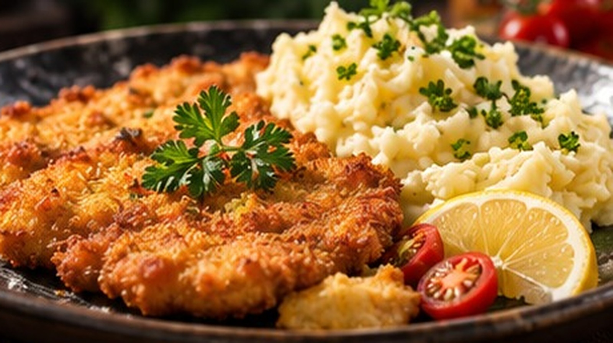
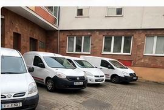
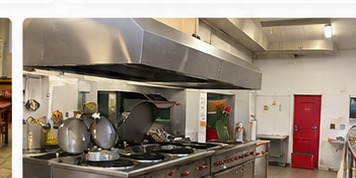
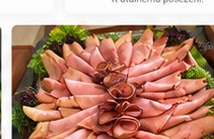

Každý den pro vás připravujeme pestrou nabídku obědů. Prohlédněte si aktuální jídelní lístek.
| Den | Hlavní jídlo | Alergeny | Cena | |
|---|---|---|---|---|
| PONDĚLÍ 19.10. | Polévka | Písmenková | 1,3,7 | 45 Kč |
| Menu č. 1 | Těstovinové rizoto s kuř. masem a zeleninou, sýr, okurek | 1,3,7 | 130 Kč | |
| Menu č. 2 | Vepřové nudličky v pepřové omáčce, dušená rýže | 1,3,7 | 130 Kč | |
| Menu č. 3 | Moravský vrabec, zelí, houskový knedlík | 1,3,7 | 130 Kč | |
| Menu č. 4 | Vepřové maso, opečené brambory, tatarka | 1 | 135 Kč | |
| ÚTERÝ 20.10. | Polévka | Pórková | 1,3 | 45 Kč |
| Menu č. 1 | Frankfurtská pečeně, těstoviny | 1,3,7 | 130 Kč | |
| Menu č. 2 | Srbské rizoto, sýr, okurek | 1,3,7 | 130 Kč | |
| Menu č. 3 | Vepřový guláš, bramborový knedlík | 1 | 130 Kč | |
| Menu č. 4 | Řízek, bramborový salát | 1,3,7 | 135 Kč | |
| STŘEDA 21.10. | Polévka | Francouzská krémová | 1,7 | 45 Kč |
| Menu č. 1 | Francouzské brambory, okurka | 1,3,7 | 130 Kč | |
| Menu č. 2 | Kuřecí plátek, brambory | 1,3,7 | 130 Kč | |
| Menu č. 3 | Kuřecí přírodní řízek se sýrem | 1,3,7 | 130 Kč | |
| Menu č. 4 | Zapečené těstoviny se zeleninou a sýrem | 1,3,7 | 135 Kč | |
| ČTVRTEK 22.10. | Polévka | Pytlácká | 1,7 | 45 Kč |
| Menu č. 1 | Kuřecí nudličky na kari a pórku, těstoviny | 1,3,7,9 | 130 Kč | |
| Menu č. 2 | Kari rýže, dušená rýže | 1,3 | 130 Kč | |
| Menu č. 3 | Svíčková na smetaně, houskový knedlík | 1,3,7 | 130 Kč | |
| Menu č. 4 | Smažený sýr se šunkou, opečené brambory, tatarka | 1,3,7 | 135 Kč | |
| PÁTEK 23.10. | Polévka | Zeleninová s párkem | 1,3,7 | 45 Kč |
| Menu č. 1 | Dušená čočka na kyselo, vejce, chléb | 1,3,7 | 130 Kč | |
| Menu č. 2 | Španělský ptáček, dušená rýže | 1,3 | 130 Kč | |
| Menu č. 3 | Kuřecí řízek, brambory | 1,3,7 | 130 Kč | |
| Menu č. 4 | Vepřový řízek, brambory, tatarka | 1,3,7 | 135 Kč |
| Den | Hlavní jídlo | Alergeny | Cena | |
|---|---|---|---|---|
| PONDĚLÍ 26.10. | Polévka | Květáková | ||
| Menu č. 1 | Kuřecí prsa v sýrové omáčce, těstoviny | 1, 3, 7 | ||
| Menu č. 2 | Vepřové nudličky stroganoff, dušená rýže | 1, 3, 7 | ||
| Menu č. 3 | Hamburská kýta na smetaně, houskový knedlík | 1, 3, 7 | ||
| Menu č. 4 | V. panenka v pepřové omáčce, opékačky, tatarka | 1 | 135 Kč | |
| ÚTERÝ 27.10. | Polévka | Česnekačka | 1, 3 | |
| Menu č. 1 | Bretaňské fazole, opečená klobáska, chléb | 1, 3, 7 | ||
| Menu č. 2 | Kuřecí ve smet.-špenátové omáčce, těstoviny | 1, 3, 7 | ||
| Menu č. 3 | Pečeně po maďarsku, dušená rýže | 1 | ||
| Menu č. 4 | Smažený kuřecí řízek (150g), bramborový salát | 1, 3, 7 | 135 Kč | |
| STŘEDA 28.10. | Polévka | STÁTNÍ SVÁTEK | ||
| Menu č. 1 | nevaří se | |||
| Menu č. 2 | nevaří se | |||
| Menu č. 3 | nevaří se | |||
| Menu č. 4 | nevaří se | |||
| ČTVRTEK 29.10. | Polévka | Jarní zeleninová | 1 | |
| Menu č. 1 | Toskánské špagety s v. masem, sýr | 1, 3, 7, 9 | ||
| Menu č. 2 | V. žebírko na slanině, dušená rýže | 1, 3 | ||
| Menu č. 3 | Plň. bramborový knedlík uzeným, zelí | 1, 3, 7 | ||
| Menu č. 4 | Smažené rybí filé, brambory, tatarka | 1, 3, 7, 9 | 135 Kč | |
| PÁTEK 30.10. | Polévka | Špenátová | 1, 3, 7 | |
| Menu č. 1 | Guláš s hlívy ústřičné, chléb | 1, 3, 7 | ||
| Menu č. 2 | Kuřecí na zelenině wok, rýže | 1, 3 | ||
| Menu č. 3 | Vepřový smažený řízek, brambory | 1, 3, 7 | ||
| Menu č. 4 | Steak s krkovice, opékačky, tatarka | 1, 3, 7 | 135 Kč |


